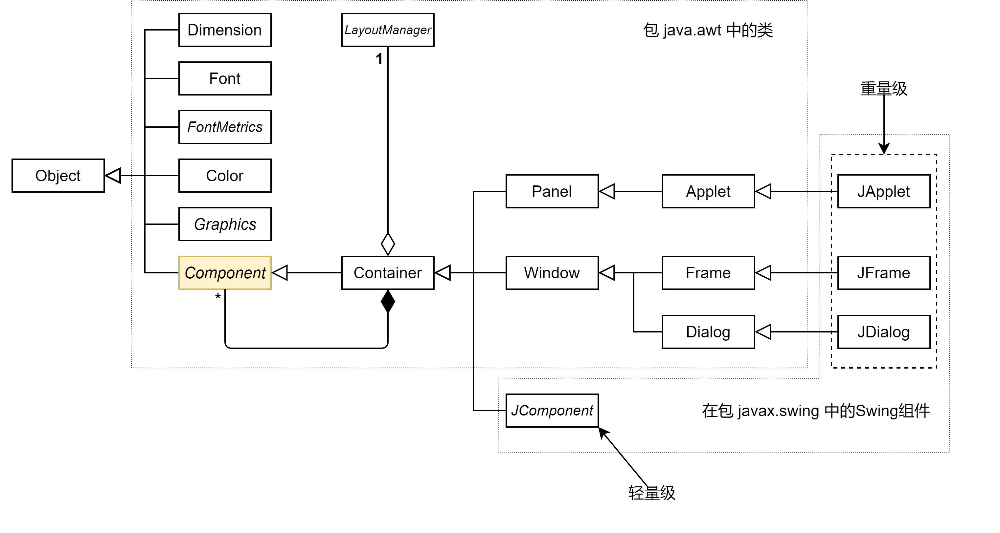
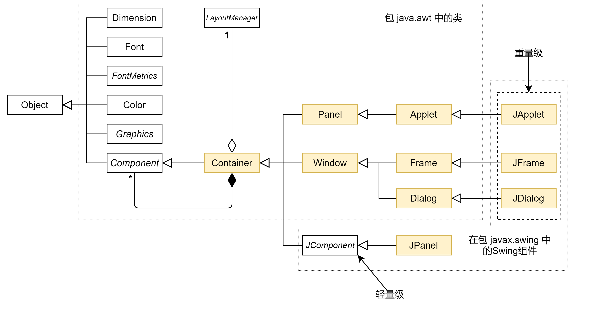
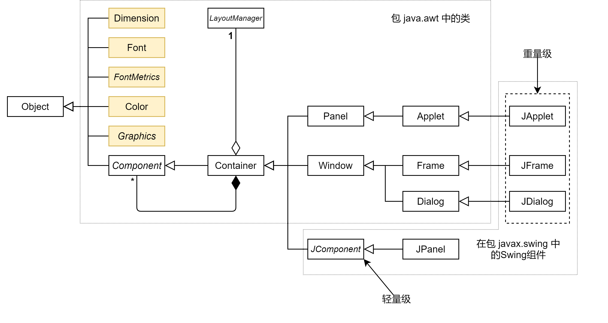
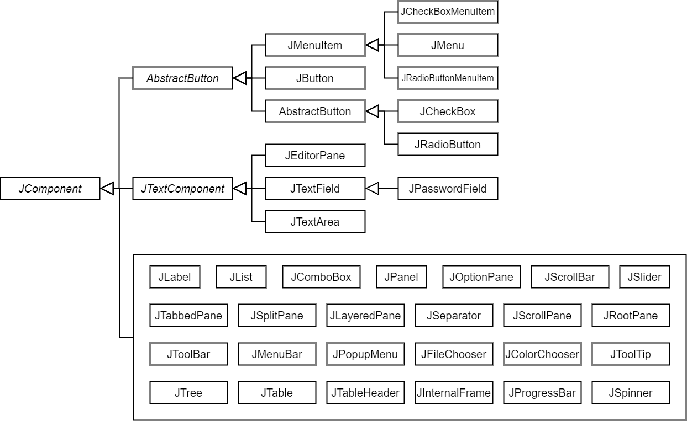
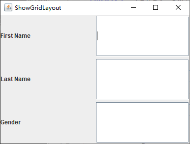
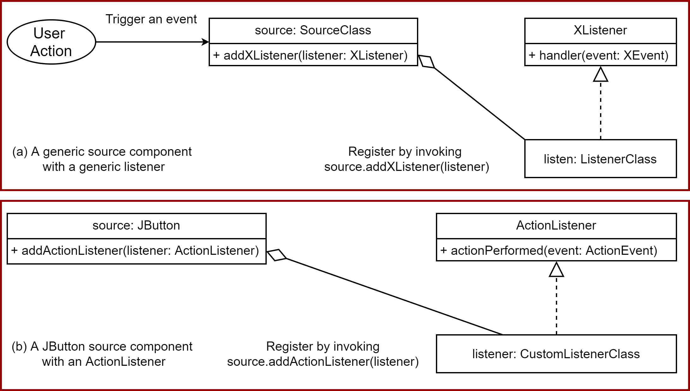

Java程序设计
第七章 GUI程序设计
GUI基本概念
- GUI组件: AWT, Swing, JavaFX
- 容器、面板、窗格
- 布局管理器
- 事件处理
AWT, Swing, JavaFX
- AWT(Abstract Windows Toolkit)
- 适用于简单的界面设计
- 平台相关，十分古老
- Swing
- 属于Java基础类库的一部分，更强壮、通用、灵活
- 平台无关，只能用于开发桌面应用，已不再更新，最后支持JDK 8
- JavaFX
- 新的Java界面开发工具，自从JDK 8以后
- 可用于开发富网络应用，适用于桌面、网页、智能设备等
- 支持多点触控，内建2D，3D，动画、视频、音频等支持，既可作为独立应用，也可从浏览器中运行
Java GUI API

Java GUI API(2)
Component类，为所有界面元素的父类，是抽象类
Java GUI API(3)
Container类，包含其它组件
Java GUI API(4)
Helper类，非Component的子类，用于描述GUI组件的属性，如字体、色彩、大小等
Java Swing GUI(1)
Java Swing GUI(2)

Frame容器示例


布局管理器
- 布局管理器Layout，提供一种抽象 ，将用户界面自动映射到所有的窗口系统
- 每个容器都有一个默认的布局管理器，负责组件的布局，包括位置和大小
- 主要的布局有:
- FlowLayout
- GridLayout
- BorderLayout
- 其它布局，如CardLayout, BoxLayout等
布局管理器-FlowLayout
按序排列，逐行填充

布局管理器-BorderLayout
分区填充(东、西、南、北、中)

布局管理器-GridLayout
按序排列，行列填充
事件
- 事件(Event)，定义为程序发生了某类事情
- 可触发事件的动作包括:
- 鼠标移动
- 鼠标/键盘点击
- 操作系统触发，如定时器

事件处理模型
典型事件
| 用户动作 | 源对象 | 触发事件类型 |
|---|---|---|
| 点击按钮 | JButton | ActionEvent |
| 点击复选框 | JCheckBox | ItenEvent, ActionEvent |
| 点击单选按钮 | JRadioButton | ItemEvent, ActionEvent |
| 文本域按回车 | JTextField | ActionEvent |
| 选定一个新项 | JComboBox | ItemEvent, ActionEvent |
| 窗口打开、关闭等 | Window | WindowEvent |
| 鼠标按住、释放等 | Component | MouseEvent |
| 键盘释放、按下等 | Component | KeyEvent |
部分事件、事件侦听、侦听方法
| 事件类(处理器) | 侦听器接口 | 侦听器方法(Handlers) |
|---|---|---|
| ActionEvent | ActionListener | actionPerformed(ActionEvent) |
| ItemEvent | ItemListener | itemStateChanged(ItemEvent) |
| WindowEvent | WindowListener | windowClosing(WindowEvent) |
| windowOpened(WindowEvent) | ||
| windowIconified(WindowEvent) | ||
| windowDeiconified(WindowEvent) | ||
| windowClosed(WindowEvent) | ||
| windowActivated(WindowEvent) | ||
| windowDeactivated(WindowEvent) | ||
| ContainerEvent | ContainerListener | componentAdded(ContainerEvent) |
| componentRemoved(ContainerEvent) | ||
| MouseEvent | MouseListener | mousePressed(MouseEvent) |
| mouseReleased(MouseEvent) | ||
| mouseClicked(MouseEvent) | ||
| mouseExited(MouseEvent) | ||
| mouseEntered(MouseEvent) | ||
| KeyEvent | KeyListener | keyPressed(KeyEvent) |
| keyReleased(KeyEvent) | ||
| keyTypeed(KeyEvent) | ||
事件举例